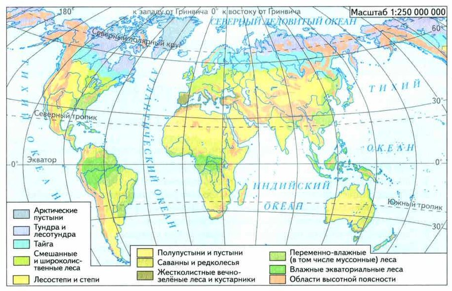
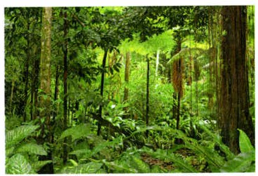
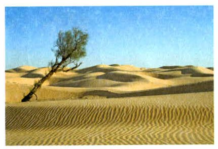
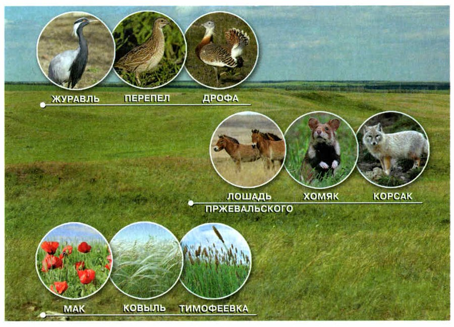
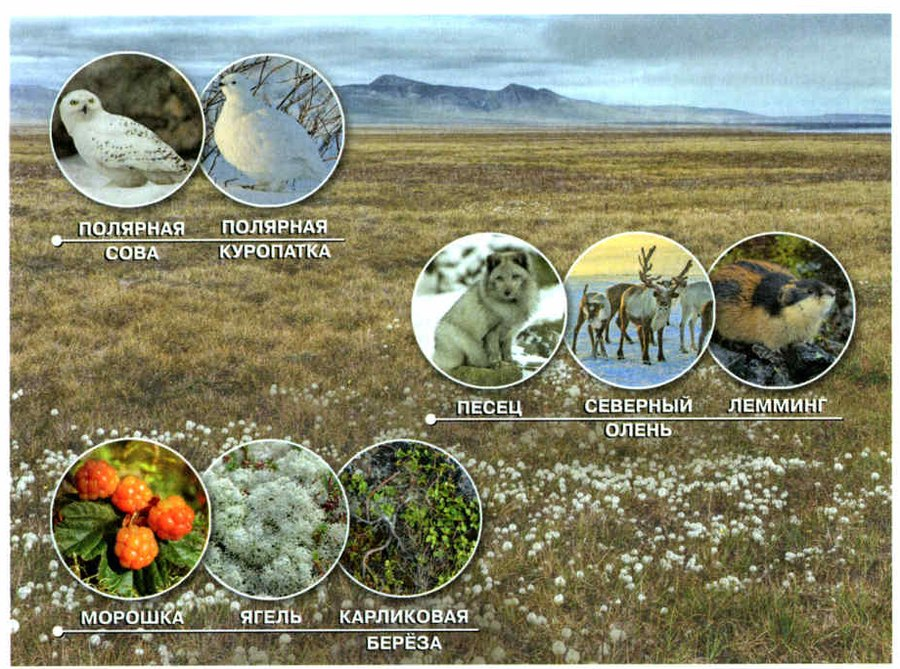

Природные зоны
В разном климате преобладают разные природные сообщества. Поэтому учёные выделяют природные зоны — части географической оболочки Земли, у каждой из которых свой животный и растительный мир, рельеф и климат (рис. 110).
Крупные природные зоны — это экваториальные тропические леса, пустыни и полупустыни, степи, смешанные и широколиственные леса, тайга, тундра, арктическая и антарктическая пустыни. В каждой — свои растения и животные.
Природные зоны. В зависимости от того, какие природные сообщества преобладают в условиях определённого климата, учёные выделяют природные зоны — части географической оболочки Земли, которые отличаются особенностями животного и растительного мира, рельефа и климата (рис. 110).
Выделяют такие крупные природные зоны, как экваториальные тропические леса, пустыни и полупустыни, степи, смешанные и широколиственные леса, тайга, тундра, арктическая и антарктическая пустыни. Для каждой природной зоны характерен свой растительный и животный мир.

▲ Найди Москву и посмотри, какого цвета вокруг неё зона. А какого цвета Турция и Кипр?
1. Что такое природная зона?
Влажные тропические леса и пустыни
Влажные экваториальные тропические леса растут у экватора. Здесь весь год жарко и влажно, а дожди идут равномерно во все времена года.
Здесь больше всего видов растений и животных (рис. 111): на одном гектаре бывает до 200 видов деревьев. Огромное множество насекомых. Звери — леопарды, обезьяны, белки-летяги, ленивцы, тапиры. Птицы — орлы-гарпии, попугаи, дятлы, туканы, гоацины, колибри. Пресмыкающиеся — хамелеоны, древесные змеи, гекконы, игуаны, агамы.
Главная угроза тропическим лесам — вырубка ради древесины: вместе с лесом исчезают многие виды растений и животных.
В пустынях выпадает мало осадков, а температура за сутки сильно меняется. Растений мало (рис. 112). Большинство животных живут в норах, у многих защитная окраска цвета песка. Крупные звери — верблюды, джейраны; хищник — пустынная рысь каракал. Много пресмыкающихся: вараны, агамы, змеи, черепахи. Птицы — рябки, саджи, саксаульные воробьи, пустынные вьюрки, белоголовый сип, ястребиный орёл.
Влажные экваториальные тропические леса. Зона влажных экваториальных тропических лесов расположена вблизи экватора. В этой зоне в течение всего года высокая температура и влажность воздуха. Обильные осадки равномерно распределены по всем временам года.
Во влажном экваториальном лесу обитает самое большее количество видов растений и животных (рис. 111). На одном гектаре иногда произрастает до 200 видов деревьев. Здесь обитает великое множество видов насекомых. Представителями млекопитающих являются леопарды, обезьяны, белки-летяги, ленивцы, тапиры. В этой зоне много птиц, которые представлены орлами-гарпиями, попугаями, дятлами, туканами, гоацинами, колибри. Из пресмыкающихся во влажном тропическом лесу обитают хамелеоны, древесные змеи, гекконы, игуаны, агамы.
Основную угрозу для влажных тропических лесов представляет заготовка человеком древесины, приводящая к исчезновению многих видов растений и животных.
Пустыни. В пустынях выпадает мало осадков и происходят большие суточные изменения температуры. Растительность в пустынях скудная (рис. 112). Большинство животных пустынь живут в норах. Многие из них имеют защитную песчаную окраску. Из крупных млекопитающих в пустынях обитают верблюды, джейраны. Из хищных млекопитающих здесь встречаются пустынные рыси — каракалы. В пустынях многочисленны различные пресмыкающиеся: вараны, агамы, змеи, черепахи. Из птиц в этой природной зоне встречаются рябки, саджи, саксаульные воробьи, пустынные вьюрки, белоголовый сип, ястребиный орёл.

▲ Сколько ярусов ты здесь видишь?

▲ Почему растений здесь так мало?
2. Почему во влажных тропических лесах так много видов? Вспомни §21.
3. Как растения и животные приспособлены к жизни в пустыне?
Степи и смешанные леса
В степях (рис. 113) преобладают травы, деревьев мало. Степная зона — на юге России. Сейчас степи почти полностью распаханы: поля чередуются с пастбищами, лесопосадками, садами и посёлками.
В степи много сурков, сусликов, тушканчиков, полёвок и мышей. Водятся степные пищухи, волки, лисы, степные хорьки. Птицы — стрепеты, журавли-красавки, степные орлы, степные луни. Типичные жители степи — жаворонки: они быстро бегают по земле и высматривают насекомых. Из пресмыкающихся — полозы, гадюки, ужи, ящерицы. Много насекомых, особенно кузнечиков.
Смешанные и широколиственные леса занимают большую часть нашей страны. Высокие деревья здесь — дуб, липа, клён, вяз, сосна, ель. Под ними растут деревья пониже, а землю покрывают травы.
Здесь живут благородный олень, косуля, кабан, лесная куница, иволга, зелёный и седой дятлы, гадюка, уж. Там, где леса вырубили, поселились жители полей и пастбищ: заяц-русак, ёж, чёрный хорь, серая куропатка.
Степи. В степях (рис. 113) преобладает травянистая растительность, деревьев мало. Зона степей находится на юге России. В настоящее время степи почти полностью распаханы. Поэтому для этой зоны характерен культурный ландшафт, в котором поля чередуются с пастбищами, искусственными лесными посадками, садами и населёнными пунктами.
В степной зоне многочисленны сурки, суслики, тушканчики, различные полёвки и мыши. Здесь водятся степные виды пищух, волки, лисы, степные хорьки. Степными птицами являются стрепеты, журавли-красавки, степные орлы, степные луни.
Типичными обитателями степей являются жаворонки. Они быстро бегают по земле, высматривая насекомых. Из пресмыкающихся в степной зоне обитают полозы, гадюки, ужи, ящерицы. Довольно широко в степи представлены насекомые. Здесь много кузнечиков.
Смешанные и широколиственные леса. Зона смешанных и широколиственных лесов занимает значительную часть территории нашей страны. Для этой зоны характерны такие высокоствольные деревья, как дуб, липа, клён, вяз, сосна, ель. Под их пологом располагаются невысокие деревья. Напочвенный покров образован различными травами.
Обитателями этой природной зоны являются благородный олень, косуля, кабан, лесная куница, иволга, зелёный и седой дятлы. Из пресмыкающихся здесь встречаются гадюка, обыкновенный уж. В зоне лесов вслед за вырубкой лесных массивов расселилось много животных, характерных для полей и пастбищ: заяц-русак, ёж, чёрный хорь, серая куропатка.

▲ Найди лошадь Пржевальского. Чем её грива не похожа на гриву обычной лошади?
дикая степная лошадь: короткая стоячая грива, чёлки нет, у основания хвоста короткие волосы, голова крупная
длинная грива лежит на шее, есть чёлка, хвост длинный от самого основания
Ты любишь лошадей — найди отличия на рис. 113.
4. Каковы особенности растительного и животного мира степей?
5. Почему в лесной зоне появились заяц-русак и ёж? Вспомни §24.
Тайга
Тайга лежит к северу от лиственных лесов. Здесь преобладают хвойные деревья: ель, пихта, сосна, лиственница. Вечнозелёные хвойные круглый год дают густую тень. В тайге много воды на поверхности и много болот. Тайга занимает большую часть Сибири, Дальнего Востока России и Канады.
Летом здесь огромные тучи мелких кровососущих насекомых — гнус. Вредители хвойных лесов — сибирский шелкопряд, серая лиственничная листовёртка, еловые усачи, короед-типограф.
Многие животные тайги питаются семенами хвойных. Здесь живут бурый медведь, лось, рысь, лесной лемминг, красная полёвка, волк, марал, бурундук, горностай, белка; птицы — свиристель, снегирь, кедровка, трёхпалый дятел, глухарь, рябчик, тетерев, ястребиная сова, длиннохвостая неясыть, клёст-еловик. Большинство птиц едят ягоды и зелёные части растений.
Тайга. Зона тайги находится севернее лиственных лесов. В этой природной зоне преобладают хвойные деревья: ель, пихта, сосна, лиственница. Вечнозелёные хвойные деревья круглый год создают густую тень. Для тайги характерно обилие поверхностных вод и значительное заболачивание территории. Тайгой занята большая часть Сибири, российского Дальнего Востока, Канады.
Для тайги характерны огромные скопления мелких кровососущих насекомых — гнус. Вредителями хвойных лесов являются сибирский шелкопряд, серая лиственничная листовёртка, еловые усачи, короед-типограф.
Большое значение в питании многих животных имеют семена хвойных деревьев. В тайге обитают бурый медведь, лось, рысь, лесной лемминг, красная полёвка, волк, марал, бурундук, горностай, белка, свиристель, обыкновенный снегирь, кедровка, трёхпалый дятел, глухарь, рябчик, тетерев, ястребиная сова, длиннохвостая неясыть, клёст-еловик. Источник пищи для большинства птиц — ягоды и зелёные части растений.
почти только хвойные: ель, пихта, сосна, лиственница; круглый год густая тень, много болот
хвойные вместе с лиственными: дуб, липа, клён, вяз, сосна, ель; под ними деревья пониже и травы
6. Чем тайга отличается от смешанных лесов?
Тундра и арктическая пустыня
Тундра лежит к северу от тайги, на побережье Северного Ледовитого океана. Это огромное безлесное пространство: лето короткое и холодное, а суровая зима длится 8—9 месяцев. Под почвой — вечная мерзлота, поэтому здесь растут в основном мхи, лишайники, влаголюбивые травы и кустарнички.
Животные тундры приспособились к суровым условиям (рис. 114). Многие к зиме становятся белыми, под цвет снега. Звери — северный олень, тундровый волк, песец, лемминги. Птицы — белая и тундровая куропатки, белая сова, кречет, мохноногий канюк. Летом гнездиться прилетают лебеди, утки, гуси. Насекомых много: комары, мошки, мокрецы, слепни.
Арктическая пустыня — самая северная зона. Климат крайне суровый: зимой до −60 °С, летом не выше +8 °С. На некоторых островах толщина ледников больше 200 м. Постоянных жителей мало, и почти все они связаны с морем.
Полярным днём сюда прилетают огромные стаи морских птиц: кайры, гагарки, чистики, тупики, топорики. Они быстро летают, хорошо плавают и ныряют, едят мелкую рыбу, раков, моллюсков, морских червей. На зиму птицы улетают.
Летом на дрейфующих льдах встречаются тюлени — большую часть жизни они проводят в воде и там добывают пищу. Типичные жители — моржи: они живут там, где в океане есть большие отмели с моллюсками — главной едой моржей.
Крупный хищник Арктики — белый медведь. Он быстро плавает, хорошо ныряет и на суше так же ловок, как в воде. Густая плотная шерсть не даёт его телу намокнуть.
Тундра. Зона тундры находится севернее тайги и занимает побережье Северного Ледовитого океана. Тундра — обширное безлесное пространство, для которого характерны короткое и холодное лето, продолжительная и суровая зима, которая длится 8—9 месяцев. Подстилаемые вечной мерзлотой почвы определяют преобладание здесь мхов, лишайников, влаголюбивых травянистых растений и кустарничков.
В тундре обитают животные, приспособившиеся к суровым условиям (рис. 114). Многие из них на зиму приобретают белую окраску под цвет снега. Из млекопитающих характерны северный олень, тундровый волк, песец и лемминги. Из птиц для этой природной зоны типичны белая и тундровая куропатки, белая сова, кречет, мохноногий канюк. В летний период в тундру прилетают гнездиться лебеди, утки, гуси. Из насекомых в тундре много кровососущих комаров, мошек, мокрецов, слепней.
Арктическая пустыня. Арктическая пустыня является самой северной природной зоной. В этой зоне крайне суровый климат и температура зимой опускается до –60 °С, а летом поднимается только до +8 °С. Характерной особенностью арктических пустынь являются ледники, толщина которых на некоторых островах превышает 200 м. Из-за суровых условий постоянными обитателями здесь являются немногие животные, жизнь которых связана преимущественно с морем.
Во время длинного полярного дня сюда прилетают огромные стаи водоплавающих птиц: кайры, гагарки, чистики, тупики, топорики. Все эти птицы быстро летают, хорошо приспособлены к плаванию и нырянию. Основной пищей им служат мелкая рыба, раки, моллюски, морские черви. На зиму птицы покидают арктическую пустыню.
Летом в Арктике на дрейфующих льдах можно встретить тюленей. Большую часть жизни они проводят в воде. Здесь они добывают пищу. К типичным животным арктической пустыни относятся моржи. Они обитают в тех местах океана, где имеются обширные отмели, богатые моллюсками, которые составляют основу питания моржей.
В арктической пустыне обитает крупный хищник — белый медведь. Он быстро плавает, хорошо ныряет. На суше он так же ловок, как и в воде. Густая и плотная шерсть надёжно защищает тело белого медведя от намокания.

▲ Найди ягель — это лишайник. Кто из животных на рисунке его ест?
тайга и смешанные леса; ест и растения, и животных; зимой спит в берлоге (§20)
арктическая пустыня; хищник, быстро плавает и ныряет; густая шерсть не намокает
Бурого ты видела в зоопарке, белого пока нет.
7. Чем растения тундры отличаются от растений смешанных лесов?
8. Почему почти все жители арктической пустыни связаны с морем?
Итоги главы 4
Природная зона · Экваториальный тропический лес · Пустыня · Степь · Смешанный лес · Тайга · Тундра · Арктическая пустыня
- Что такое природная зона?
- Каковы особенности растительного и животного мира степей?
- Чем тайга отличается от смешанных лесов?
- Как растения и животные приспособлены к обитанию в пустынях?
- Чем растения тундры отличаются от растений смешанных лесов?
- Используя рис. 114, расскажите о растительном и животном мире тундры.
Почему во влажных экваториальных тропических лесах самое большое видовое разнообразие растительного и животного мира?
На одной территории живут вместе растения, животные, грибы и бактерии. Они связаны друг с другом и со средой. Живая природа состоит не только из отдельных организмов и видов, но и из природных сообществ — биоценозов.
Сообщество живёт как единое целое, почти как один организм. Если связи в нём нарушить, может погибнуть всё сообщество.
Чтобы выращивать растения и разводить животных, человек создаёт искусственные сообщества — их создаёт и поддерживает человек.
В сходных природных условиях на одной территории живут особи разных видов растений, животных, грибов и бактерий. Они взаимодействуют между собой, приспосабливаются к условиям среды обитания и поддерживают своё существование через связи друг с другом. Это означает, что живая природа состоит не только из отдельных организмов и видов, но и из разнообразных природных сообществ, или биоценозов.
Любое природное сообщество существует как единое целое, как единый организм. Это обеспечивается взаимодействием обитающих в нём организмов друг с другом и с окружающей средой. Если эти связи нарушаются, то это может привести к гибели всего сообщества.
Для выращивания растений и разведения животных человек создаёт искусственные сообщества — это сообщества организмов, создаваемые и поддерживаемые человеком.
§22 Пищевые связи, цепи и сети; к следующему звену переходит около 10 % энергии.
§23 Озёра и пруды, луга, болота, леса; ярусы и лесная подстилка.
§24 Искусственные сообщества: поле, сад, лесопарк; они держатся трудом человека.
§25 Природные зоны: от тропического леса до арктической пустыни.
Проверь себя
Ошиблась — не страшно, попробуй другую кнопку.
Тукан
Яркая птица экваториальных лесов.
Верблюд
Запасает жир в горбах.
Суслик
Степной грызун.
Северный олень
Ест ягель.
Ленивец
Живёт на деревьях у экватора.
Каракал
Пустынная рысь.
Лошадь Пржевальского
Рис. 113.
Песец
Зимой белый.
Кедровка
Ест семена хвойных.
Липа и дуб
Высокоствольные деревья зоны.
Морж
Ест моллюсков с отмелей.
Бурундук
Житель тайги.
Косуля
Обитатель лесной зоны.
Белый медведь
Хищник, плавает и ныряет.
1. В какой зоне больше всего видов растений и животных?
2. В какой природной зоне находится Москва?
3. Что в горбах у верблюда?
4. Почему степи сейчас почти не похожи на рис. 113?
5. Сколько длится зима в тундре?
6. Что ест северный олень зимой?
Расскажи вслух
Природные зоны
- Определение природной зоны.
- Зоны с севера на юг: арктическая пустыня, тундра, тайга, смешанные леса, степи, пустыни, тропические леса.
- Москва — смешанные леса; Ягодное — лесостепь.
Тропический лес и пустыня
- Тропический лес: жарко и влажно, больше всего видов; угроза — вырубка.
- Пустыня: мало осадков, суточные перепады температуры, норы, песчаная окраска.
- Мой пример — верблюд в этнопарке.
Степь, смешанный лес, тайга
- Степь: травы, грызуны, жаворонки; почти распахана; лошадь Пржевальского.
- Смешанные леса: дуб, липа, клён; олень, косуля, кабан.
- Тайга: хвойные, болота, гнус; медведь, лось, рысь.
Тундра и Арктика
- Тундра: мерзлота, мхи и лишайники, белая окраска зимой; северный олень и ягель.
- Арктическая пустыня: льды, −60 °С; птицы, тюлени, моржи.
- Белый медведь: плавает, ныряет, шерсть не намокает.